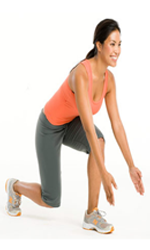

ေလ့က်င့္ခန္း ၃(အလယ္ အလတ္)

ေျခကို အနည္းငယ္ခြဲျပီ မတ္တပ္ရပ္ပါ။
ဒူးကို အနည္းငယ္ ေကြးထားပါ။
လက္ေတြကိုေတာ့ ခ်ထားပါ။
ဘယ္ေျခကို ေရွ႕ထုတ္ျပီး ကိုယ္ကို ကိုင္းပါ။
ဘယ္ဘက္ ေပါင္ႏွင့္ ညာ ေျခသလံုးက ေရျပင္ညီမ်ဥ္းနဲ႔ ျပိဳင္မ်ဥ္းသဖြယ္ ရွိေနရပါမယ္။
လက္ေတြကိုေတာ့ ေရွ႕ကို ထုတ္ထားပါ။
မူလ မတ္တပ္ရပ္ ေနတဲ့ အေနအထားဆီ ျပန္သြားပါ။
၈ ၾကိမ္ ေလာက္ ျပဳလုပ္ျပီးရင္ ေျခေထာက္ေျပာင္းပါ။